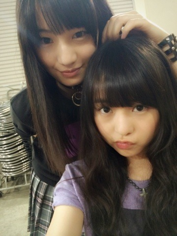
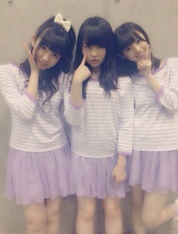
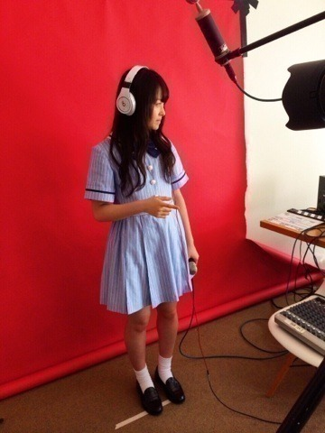
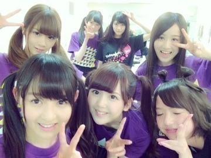

2014/0627Friくしゃくしゃぽい。 580回目
若月お誕生日おめでとう！
私は若月の頭の回転の
はやさが欲しい。
あと、いつまでも黒髪でいてほしい←
そして、舞台で
演技してる若月が好きです。
素敵な1年になりますように！
第37回パールボウルのハーフタイムで
ロマンスのスタート
夏のFree＆Easy
の2曲を披露させていただきました！
来てくださったファンのみなさん
ありがとうございました。
出演することを事前に
伝えていなかったので申し訳ないです。
東京ドームの真ん中で
のびのびと踊れて幸せでした！
チアリーダーのみなさん
ありがとうございました！
あと、いろいろ
お仕事させていただいています。
そんな中明日から
アンダーライブが始まる。
まずは、土日4公演。
よろしくお願いします。
なんと、今回はグッズまでできました！
有難い。あのTシャツは
ジャケ写でみんな着てたやつだから、
ぜひおそろいにしましょう。
ちなみに私は紫です。

ライブは、詰め込み過ぎなくらい
内容が盛りだくさんだよ。
メンバーに向けてのコールは
いつもより大きな声でよろしくっ
おもっきり楽しもう！
この前この4にんで
仕事の合間にインドカレー
食べたんだけど美味しかった。
不思議なことに
食べたその日家に帰ったら、
お母さんがインドカレー作ってたの。
カルディに売ってるやつ。
甘口食べたけど、独特な味で
美味しかった。
自分が食べたいとか食べたものを
その日にお母さんが
作ってることが多い。
たまたまだろうけど、不思議〜
一時期伊藤家は
モロッコ料理にハマってて
タジン鍋よく食べてたんだけど、
最近はない...
食べたい。
エスニック料理食べたい。
ひよこ豆をペーストにして
パンに塗って食べたい。
あれだいすき。
食べ物の話ばかりになりましたが、
アンダーライブ気合十分です！
がんばります！！
よろしくお願いします。
まりか
2014/0623Mon忍びナッツ。579回目
お久しぶりの個別握手会。
握手会が新しくなって
開場時間が早まったり
握手前も忙しくなりました。
1部、2部
夏になると着る
この白レースのサロペット！
ボロボロ！！通気性！！
お気に入りだよ
サロペット Auntierosa
タンクトップ ZURI
インナー UNIQLO
サンダル GAIMO
タンクトップとサンダルの色好き。
ピンクパープル？
服とか小物とか
この色ばっかり集めてたりする。
3部は以前日芽香と飛鳥と私の
BOMBの撮影で
使った衣装を着ました！

両手に花
BOMBだと気づいた方、流石！
プリンシパルの感想、
観に行った時に
まりかが二幕に出てなかった！
と残念がられる方が沢山いて
申し訳なかったです...
それぞれの二幕での感想、
どの役でもハマってた
まりからしかった
と言ってくださって
めちゃくちゃ嬉しかったです！
いろんな役できるって
やっぱりいいなあ
でも似合うのはポリン姫が
いちばん多かったかな？
何にせよ嬉しい。
らりんのラジオで初解禁になった
アンダー曲 ここにいる理由
の感想もありがとう！
好評みたいでよかったです。
んー早くライブで披露したい！！
いままでの握手会とは
全く違うかたちですが、
無事に握手会が開催されました。
やっぱり直接声をかけてくださると
元気もらえるし、なにより
笑顔が見られるだけで安心します。
初めてだったので、
戸惑いがあったと思いますが
対応してくださって
ありがとうございました！
そしてこれから
よろしくお願いします。
今週アンダーライブ始まるし、
リハも頑張ってるよ〜
前回以上に盛り上げなきゃ！
まりか
2014/0619Thuソファに住んでる鰐 。578回目
髪のけ
みじかくなりました
乃木どこのゴリ押し推薦文
両親からバナナマンさんへの
プレゼント...なんですかあれは！！
いつの間に作っててびっくり。
推薦文採用されてなかったから
ゴリ押しでもなんでもないぜ
グラフィックデザイン
ファッションデザイン
私も両親に負けてられない。
前回、バナナマンさんのロゴを
さりげなく使ってて父喜んでました。
ありがとうございます...！
......
17日間22公演
16人のプリンシパルtrois
無事に終了しました。
気持ち的には、、
やっと終わった
という感じです。
稽古と公演期間
とっっっても長かったです。
今回は脚本福田雄一さんによる
コメディエンヌな舞台。
テーマは笑い。
正直言うと、
笑いに対してとても不安でした。
最も苦手意識があるものだからです。
プリンシパルの代名詞でもある
一幕のオーディション内容。
今回はコントでした。
コントで決めるってどういうこと？
絶対無理だ。もうだめだ。
説明を受けて最初に思いました...
やっぱり結果を残せず、
自分から笑いをつくるって
こんなに難しいのか
と実感しました。
最初はお客さんの目をひくように
変な声とか動きでやってみようとか
思ってたり...
でも後半戦になって、
それが間違ってることに気付いて、
ちゃんと自分の演技で勝負しようと
考えるようになりました。
そうしたら、自分が納得いくような
コントができるようになって、
辛かったけど、楽しくなってきて、
二幕に出れたときももっと自分が
楽しもうと思うようになりました！
二幕で演じたのは
パム
ルイーダ
ポリン姫
キャサリン
ベル
侍女2
マキア
ロザリオ
10役中7役！
侍女1回のみ！
千秋楽はどちらも出ることはできず。
これ以外の
エルザ、エステル、クリスティーヌも
立候補したのですが
激戦区に当たることが多く
なることはできませんでした。
結果的に10役制覇はできなかったけど
10役立候補できてよかった！
去年のプリンシパルdeuxでは
二幕で演じたのは3役だけでしたが、
今回は7役も演じられた。
自分にとっては大きな変化です。
何より勉強になった笑い。
台詞の間、表情全部難しかった。
そしてやっぱり苦手だ。
お客さんがみんな暖かくて
スタッフさん、福田さんが
笑ってくださるととても安心して...
暖かい環境で賑やかな舞台を
つくってくださったみなさんに
本当に感謝しています。
佐藤二朗さんのソニーのコンノも
毎回笑ってたー
千秋楽、二幕を襲撃。
私はぐちゃぐちゃにまるめた
プリンシパルのチラシ二刀流。
これは福田さんが
作ってくださいました笑
一幕の結果が出て
楽屋に戻ったと同時に
声出して大号泣したんです。
その私を見て福田さん大笑いするし笑
おもっきり文句言ってこい！
暴れてこい！
って言ってくれた福田さん。
福田さんの笑い声に
救われた舞台でした。
ありがとうございました！！
......
個人pv予告公開中。

伊藤万理華×関和亮
Type-B収録です。
よろしくお願いします！！
まりか
2014/0614Sat昼寝の夢。577回目
や！
西京焼き弁当食べて
和菓子も食べて
幸せいっぱい
ヨーグルト
お世話になりました
今日は昼公演で
初めてロザリオに立候補しました！
夜公演は初日ぶり？にエステル。
ロザリオを演じることができました。
ロザリオ改め侍女Dの
城壁でポリンをけなす部分で
まりっかを少し歌えて良かった。
エステルには選ばれませんでした！
悔しい！
最近になってから、
自分の中で納得がいくような
コントができるようになりました。
(まあ日によって違うけど)
数えると2、3回...←
初日からずっと
一幕に苦戦していて、
当然選ばれないだろうなと
だから納得がいった日に
名前呼ばれないとき、
悔しい！と思えるのが嬉しかった
パム
ルイーダ
ポリン姫
キャサリン
ベル
侍女2
マキア
ロザリオ
今のところ、
10役中7役演じることができました。
やっぱり二幕が楽しい。
明日はついに千秋楽です。
稽古や今までの公演を思い出しながら
やり切ろう、全部使い果たしたい。
おもいっきり笑いたい。
楽しもう！
もうおもっきり楽しむ！
頑張るぞー
まりか
2014/0608Sun植物の声。576回目
総選挙、生駒14位！
中継見ていました。
発狂した！
生駒が欠席した公演の一幕で
隣にいなかったのが
少し寂しかったですが、
今日いつも通りの生駒がいて
とても安心しました。
がんばれ、がんばれ！
玲奈さん、
5位本当におめでとうございます！
プリンシパルの期間
少しお話できました。
またお話したいです^^
プリンシパル、
いよいよ後半戦に突入しました！
今までやったのは
パム
ルイーダ
ポリン姫
キャサリン
ベル
の5役です。
侍女にはなってません。
なかなか厳しい。
日々、笑いの難しさを実感してます。
二幕はずっと稽古してきたから
もちろんできるけど、
一幕はやはり難しいです。
どんなに二幕の役ができても
一幕を越えなければ
三幕のミニライブまでお預けです。
でも、二幕出られなくても
三幕のミニライブ
後ろの列で
二幕に出られない分発散してる！
たったの2曲で汗だらだらだよ。
今日の昼公演では
立候補したベルに選ばれました！
みり愛がポリン姫！
可愛らしい姫でした...
一緒に出ようねって約束してたの。
みり愛にとっての千秋楽に
約束守れてよかった！
夜公演はエルザを
リベンジしたのですが
落ちてしまいました...
またリベンジしたいです。
三幕のミニライブですが、
なぁちゃんが体調不良で
欠席だったため、
気づいたら片想い
ロマンスのスタート
2曲ともアンダーを務めました。
早く体調良くなりますように、
ねねも復活しますように...
ミニライブでのMC中
発表がありました
アンダーライブ、追加公演決定！
有難いことにたくさんの応募が
あったと耳にしました。
■7月25日（金）
開場17:00 開演18:00
■7月26日（土）
①開場11:00 開演12:00
②開場16:00 開演17:00
渋谷AiiAシアター
指定 5,000円(税込)
開場17:00 開演18:00
■7月26日（土）
①開場11:00 開演12:00
②開場16:00 開演17:00
渋谷AiiAシアター
指定 5,000円(税込)
3公演追加！
よろしくお願いします！
そして、お知らせがもうひとつ...
以前表紙イラストを担当した
熊坂出さんのウェブ小説。
第2弾も担当させていただきました！
嬉しい嬉しい
短編小説『さらばアンサツシャ』
ぜひ、読んで、見てください！

まりか